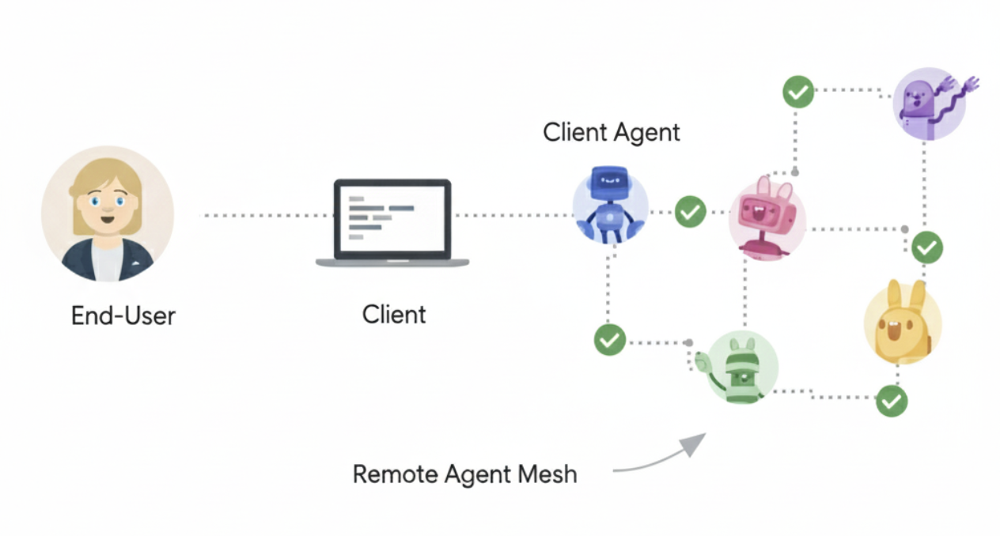
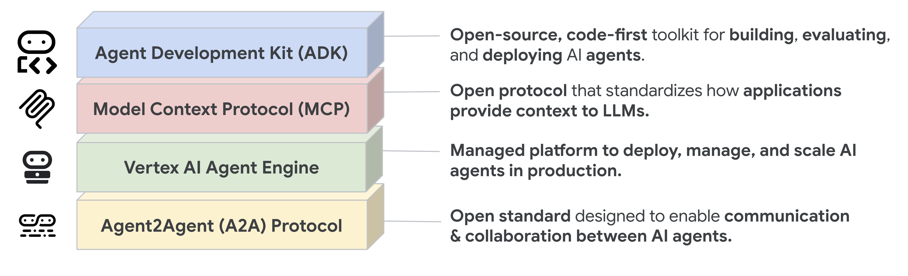
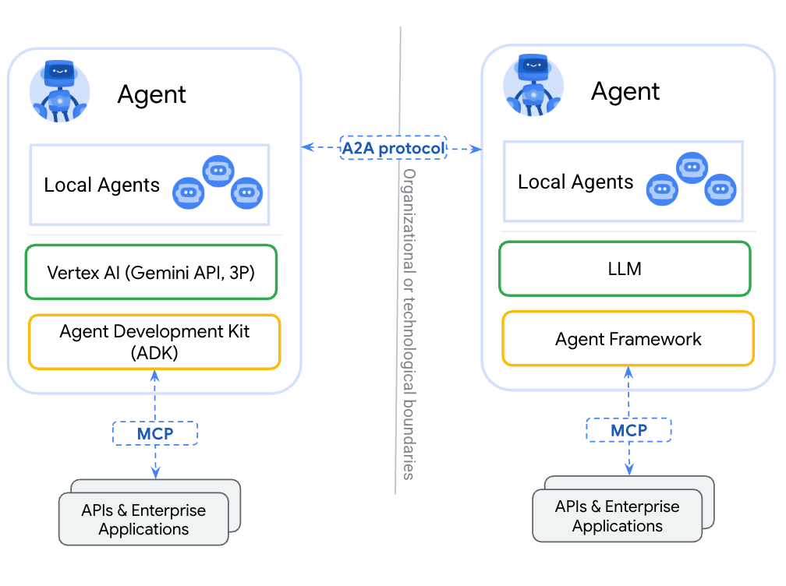

什么是 A2A？
A2A（Agent2Agent）协议是一种开放标准，让 AI 智能体之间能无缝通信、一起干活。它给用不同框架、不同厂商做出来的智能体提供一套"通用语言"，促进互操作性，打破孤岛。智能体就是在自己环境里独立做决策、解决问题的角色；A2A 让来自不同开发者、不同框架、不同组织的智能体也能凑到一块儿协作。
一、为何要用 A2A？
A2A 解决的是 AI 智能体协作里最头疼的那几件事，给智能体之间的交互定了一套标准玩法。下面先说它解决了啥问题，再看一个具体例子。
A2A 解决了什么问题
假设用户让 AI 助手"规划一次国际旅行"。 这事得协调一堆专用智能体：机票预订、酒店预订、当地旅游推荐、货币兑换等等。
没有 A2A 的时候，把这些智能体接在一起会碰到以下问题（与原文顺序一致）：
- 安全缺口（Security Gaps）：临时拼的通信往往缺乏一致的安全措施。
- 互操作性（Interoperability）：这种做法限制互操作性，阻碍复杂 AI 生态的有机形成。
- 可扩展性（Scalability Issues）：智能体和交互一多，系统就难以扩展和维护。
- 创新缓慢（Slow Innovation）：每个新集成都要定制开发，拖慢创新。
- 定制集成（Custom Integrations）：每次交互都需要定制、点对点的方案，工程开销大。
- 智能体暴露方式（Agent Exposure）：大家往往把智能体包装成工具再暴露给别的智能体，类似 MCP（Model Context Protocol）里暴露工具那样。但智能体天生是为直接协商设计的，当工具用就浪费了；A2A 允许智能体以本来面目暴露，无需这种包装。
A2A 协议通过建立智能体之间可靠、安全交互的互操作性，来应对上述挑战。
一个例子：从"规划旅行"说起
用户的复杂请求：用户对 AI 助手说一句"规划一次国际旅行"。
协作需求：助手发现光靠自己不行，得叫上机票、酒店、货币、当地旅游等多个专用智能体一起干。
互操作性挑战：问题在于——这些智能体各搞各的，没有统一协议，既没法协作，也不知道对方能干啥，等于各自孤岛。
"使用 A2A"之后：A2A 协议为智能体提供标准的方法和数据结构，使其彼此通信；不论底层如何实现，同一批智能体都可作为互联系统，通过标准化协议无缝通信。作为编排者的 AI 助手，从所有支持 A2A 的智能体处获得一致的信息，继而将一份完整、统一的旅行计划作为对用户初始提示的无缝响应呈现给用户。

二、核心优势
用上 A2A 之后，在整个 AI 生态里能拿到这些好处（与原文顺序一致）：
- 支持 LRO（Support for LRO）：协议支持长时间运行操作（LRO），以及基于 Server-Sent Events（SSE）的流式与异步执行。
- 降低集成复杂度（Reduced integration complexity）：协议标准化了智能体通信，团队可以专注各自智能体提供的独特价值。
- 智能体自主性（Agent autonomy）：A2A 让智能体在与其他智能体协作的同时，仍保留自身能力，作为自主实体行动。
- 互操作性（Interoperability）：A2A 打破不同 AI 智能体生态的孤岛，使不同厂商、不同框架的智能体能够无缝协作。
- 安全协作（Secure collaboration）：没有标准时，难以保证智能体间通信的安全。A2A 使用 HTTPS 进行安全通信，并保持执行不透明，协作时智能体无法窥探其他智能体的内部运作。
三、设计原则
A2A 的开发遵循优先考虑广泛采用、企业级能力与面向未来的原则（与原文顺序一致）：
- 不透明执行（Opaque Execution）：智能体在协作时不暴露内部逻辑、记忆或专有工具，交互依赖声明的能力与交换的上下文，从而保护知识产权并增强安全。
- 模态无关（Modality Independent）：协议允许智能体使用多种内容类型通信，支持超越纯文本的丰富、灵活交互。
- 异步（Asynchronous）：A2A 原生支持长时间运行任务，应对智能体或用户可能非持续在线的场景，采用流式、推送通知等机制。
- 企业就绪（Enterprise Readiness）：A2A 满足关键企业需求，在认证、授权、安全、隐私、追踪与监控方面对齐标准 Web 实践。
- 简洁（Simplicity）：A2A 基于 HTTP、JSON-RPC、Server-Sent Events（SSE）等现有标准，避免重复造轮子，加速开发者采用。
四、技术栈：A2A、MCP 与 ADK
A2A 处在更广泛的智能体技术栈中，该栈包括（与原文自底向上顺序一致）：
- 模型（Models）：智能体推理的基础，可以是任意大语言模型（LLM）。
- 框架（如 ADK）（Frameworks (like ADK)）：提供构建智能体的工具集。
- MCP：将模型与数据、外部资源连接起来。
- A2A：标准化部署在不同组织、用不同框架开发的智能体之间的通信。

A2A 和 MCP 有啥不同
在更广泛的 AI 通信生态中，你可能熟悉旨在促进智能体、模型与工具之间交互的协议。其中，Model Context Protocol（MCP） 是一种新兴标准，专注于将大语言模型（LLM）与数据、外部资源连接起来。
Agent2Agent（A2A） 协议则用于标准化 AI 智能体之间的通信，尤其是部署在外部系统中的智能体。A2A 与 MCP 互补，针对智能体交互中相关但不同的层面。
- MCP 的焦点：降低将智能体与工具、数据连接起来的复杂度；工具通常是无状态的，执行特定、预定义的功能（如计算器、数据库查询）。
- A2A 的焦点：让智能体以其原生模态协作，以智能体（或用户）身份通信，而非被约束为工具式交互；从而支持推理、规划、向其他智能体委派任务等复杂多轮交互，例如下单时的协商与澄清。
将智能体封装为简单工具本质上有局限，无法体现智能体的全部能力。

A2A 和 ADK 啥关系
Agent Development Kit (ADK) 是 Google 开发的开源智能体开发工具包。A2A 是智能体通信协议，使智能体能够进行跨智能体通信，与其构建所用框架（如 ADK、LangGraph 或 Crew AI）无关。ADK 是灵活、模块化的框架，用于开发和部署 AI 智能体；虽针对 Gemini AI 与 Google 生态优化，但 ADK 与模型、部署方式无关，并致力于与其他框架兼容。
五、A2A 请求生命周期（A2A Request Lifecycle）
A2A 请求生命周期是一个序列，描述请求所遵循的四个主要步骤：智能体发现（agent discovery）、认证（authentication）、sendMessage API 和 sendMessageStream API。下图进一步展示操作流程，说明客户端、A2A 服务器与认证服务器之间的交互。
sequenceDiagram
participant Client
participant A2A Server
participant Auth Server
rect rgb(240, 240, 240)
Note over Client, A2A Server: 1. Agent Discovery
Client->>A2A Server: GET agent card eg: (/.well-known/agent-card)
A2A Server-->>Client: Returns Agent Card
end
rect rgb(240, 240, 240)
Note over Client, Auth Server: 2. Authentication
Client->>Client: Parse Agent Card for securitySchemes
alt securityScheme is "openIdConnect"
Client->>Auth Server: Request token based on "authorizationUrl" and "tokenUrl".
Auth Server-->>Client: Returns JWT
end
end
rect rgb(240, 240, 240)
Note over Client, A2A Server: 3. sendMessage API
Client->>Client: Parse Agent Card for "url" param to send API requests to.
Client->>A2A Server: POST /sendMessage (with JWT)
A2A Server->>A2A Server: Process message and create task
A2A Server-->>Client: Returns Task Response
end
rect rgb(240, 240, 240)
Note over Client, A2A Server: 4. sendMessageStream API
Client->>A2A Server: POST /sendMessageStream (with JWT)
A2A Server-->>Client: Stream: Task (Submitted)
A2A Server-->>Client: Stream: TaskStatusUpdateEvent (Working)
A2A Server-->>Client: Stream: TaskArtifactUpdateEvent (artifact A)
A2A Server-->>Client: Stream: TaskArtifactUpdateEvent (artifact B)
A2A Server-->>Client: Stream: TaskStatusUpdateEvent (Completed)
end
本文出处与版权声明
- 原文标题：What is A2A?
- 原文来源：A2A Protocol 官方文档
- 原文链接：https://a2a-protocol.org/latest/topics/what-is-a2a/#the-interoperability-challenge
- 版权：Copyright 2026 The Linux Foundation. Licensed under the Apache License, Version 2.0.
- 本文为上述文档的摘录与中文翻译，仅供学习与参考，版权归 The Linux Foundation 及 A2A 项目所有。